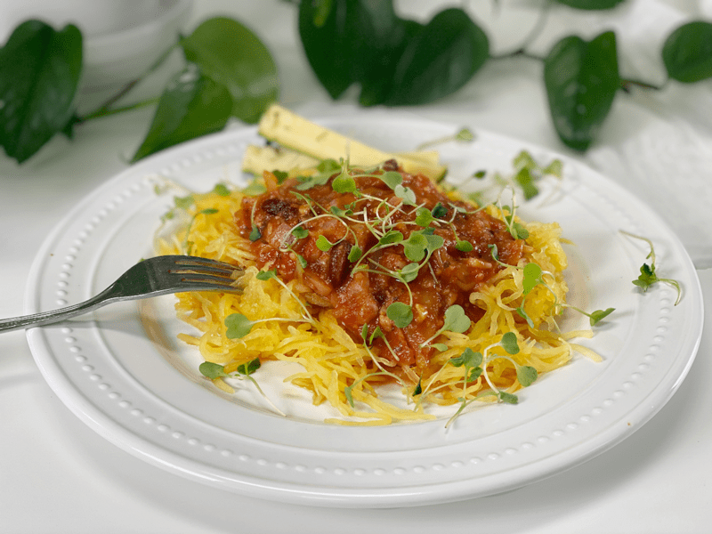

End of the Week Spaghetti | Cooked | Plates of Inspiration
This literally turned out to be the end of the week spaghetti. Not only was this dish plated up on the weekend (the end of the week), but it was also made from my End of the Week Soup that I created last Sunday. Did I lose you? If so, sorry. It sounded better inside my head than out. Nevertheless, I am not going to erase it and start over. You’re stuck with the words that cloud my mind. Ha.

After all that rambling…let me just get to the point. Today’s lunch consisted of the last bowl of my End of the Week Soup (which I created out of leftovers last week) That would make it leftovers of leftovers. Whew, that’s kind of like saying, “My dad’s sister’s friend’s brother who has a friend of a friend who….” What is it with my thought process today? Has the COVID-19 quarantine finally gotten to me? Sadly, I think not–this is my usual weird sense of humor.
Okay, so I established that I used my leftover End of the Week Soup with this lunch. It’s a soup with a stew-like texture. I had some leftover spaghetti squash noodles from two days ago, so I placed a bed of that on the plate for starters. I followed it with the remaining soup (which resembles a spaghetti sauce, now that I look closely at the photo), then sprinkled it with arugula microgreens. I have been rationing my little container of those beauties by using them strictly for garnishing. Their peppery flavor complements so many dishes.
Can you make out those blurry sticks toward the back of the plate? Well, those are my Savory Refrigerator Zucchini Pickles. My plate was 100% plant-based, vegan, gluten-free, oil-free, and nut-free. I hope these Plates of Inspiration add a breath of fresh air to your life. It’s easy to get caught up in the boredom of leftovers, but trust me…think outside the box, and pull leftovers together in creative ways. We are living in some “interesting” times; let’s make the best with what we have. Love and health, amie sue
© AmieSue.com